Détection structurelle et environnementale
Capture les vibrations, les déplacements, l'inclinaison, la température, l'humidité, les gaz, les particules, la pression et toute variable critique de l'actif.
Qartia conçoit, développe et intègre des systèmes IoT, des communications sans fil, des analyses avancées et des modèles d'intelligence artificielle pour connaître l'état des infrastructures civiles critiques en temps réel.
La solution permet de capturer des variables structurelles, environnementales et opérationnelles, de les envoyer en toute sécurité vers la plateforme et de les convertir en tableaux de bord, seuils de risque et alertes actionnables pour les opérateurs et responsables techniques.
Cette ligne est particulièrement pertinente pour les tunnels, ponts, viaducs, routes, barrages, hôpitaux, bâtiments uniques et infrastructures hydrauliques où la continuité et la sécurité du service dépendent d'une surveillance continue.
Avec Qartia, l'infrastructure cesse d'être gérée uniquement par une inspection spécifique et commence à fonctionner comme un actif surveillé et traçable préparé pour la maintenance prédictive.
Qartia intègre des capteurs, l'acquisition de données, les communications, l'alimentation, la visualisation et l'intelligence pour transformer l'actif physique en un système d'exploitation surveillé.
Le client obtient une infrastructure surveillée en permanence, avec la possibilité de contextualiser les événements et de faire évoluer le déploiement sans refaire l'architecture.
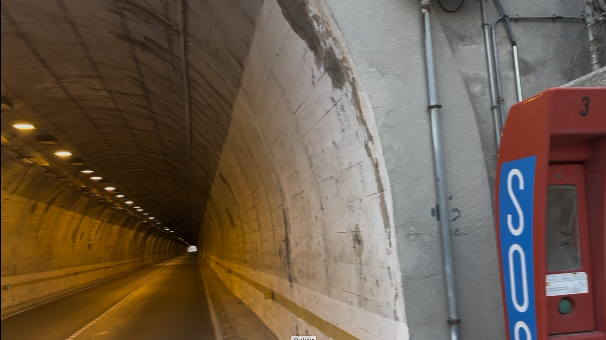
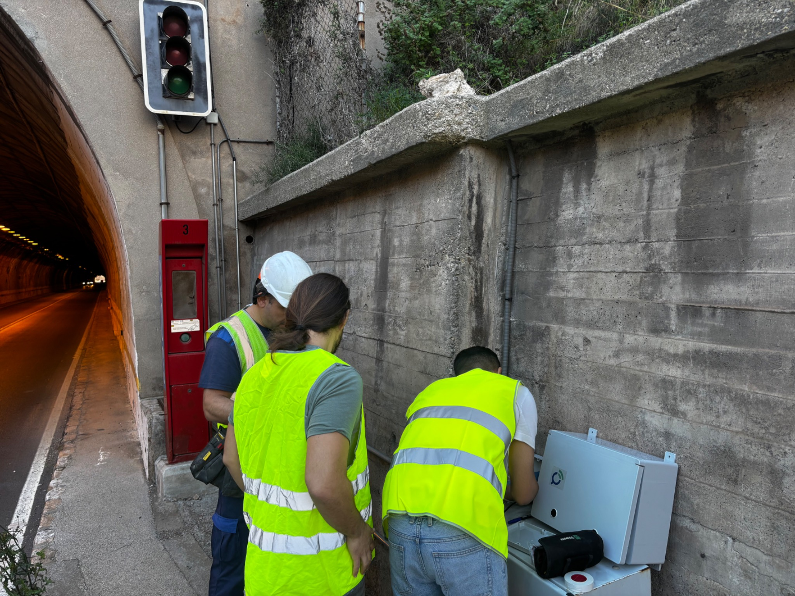
Un flux de bout en bout pour convertir les mesures sur le terrain en décisions rapides d'exploitation, de maintenance et de sécurité.
La plateforme est prise en charge par l'acquisition sur le terrain, le réseau IoT, le backhaul sécurisé, le cloud Qartia et des modèles intelligents pour transformer les mesures techniques en opérations préventives.
L'architecture est évolutive : elle est conçue pour s'intégrer à l'infrastructure existante et se développer par modules en fonction de la couverture, de la criticité et des objectifs du client.
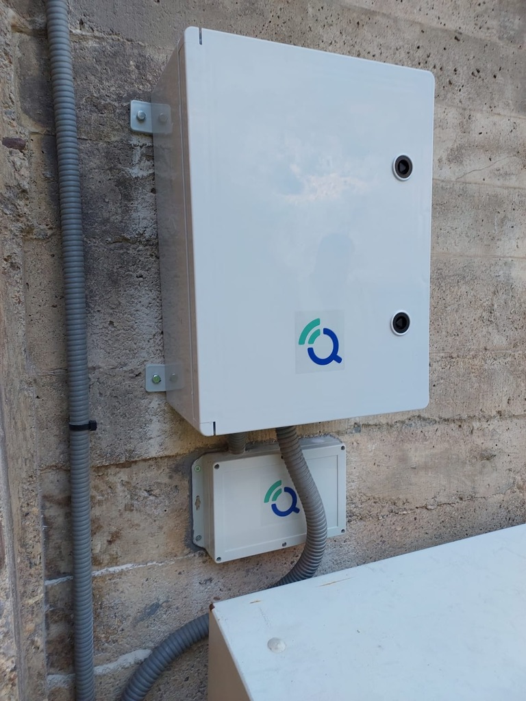
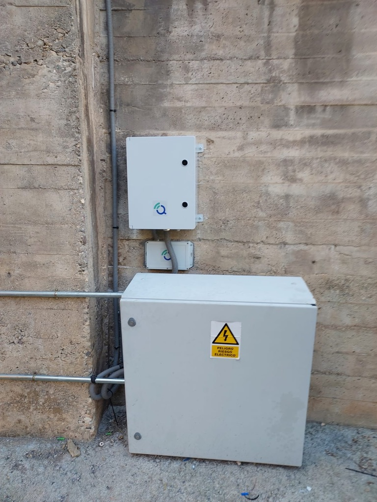
Capture les vibrations, les déplacements, l'inclinaison, la température, l'humidité, les gaz, les particules, la pression et toute variable critique de l'actif.
Architectures hybrides avec LoRa, 5G, MQTT et VPN sécurisé à déployer dans des tunnels, des environnements distants et des réseaux complexes.
Tableaux de bord pour opérateurs et clients avec vision opérationnelle, alarmes, historique et traçabilité des événements.
Représentation visuelle de l'actif pour contextualiser les capteurs, les zones critiques, les états et la maintenance.
Des modèles pour détecter les anomalies, anticiper les dégradations et estimer l'usure avant l'apparition des pannes.
Génération d'avertissements automatiques pour les opérateurs, les opérateurs, les clients et les services d'urgence.
Possibilité ouverte de se connecter aux SCADA, BMS, SIG, systèmes d'entreprise ou centres de contrôle existants.
Surveillance de l'état de l'électronique de terrain et planification de la maintenance basée sur les conditions réelles.
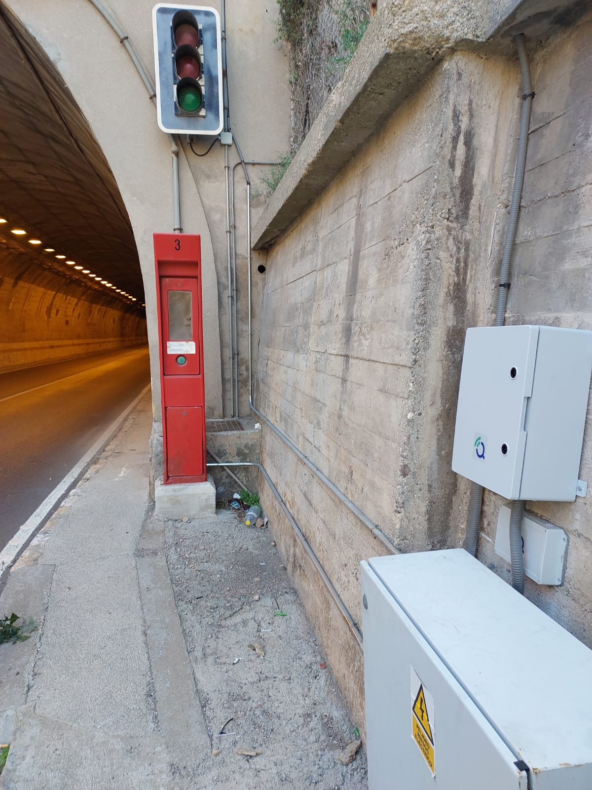
Identifiez les écarts avant qu'ils ne se transforment en incidents de sécurité ou de service.
Il permet d'agir avec les données et de prioriser les inspections ou les fermetures de manière mieux fondée.
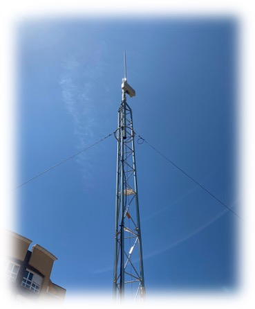
Offre une visibilité supplémentaire en cas d'épisodes climatiques, sismiques ou de dégradation accélérée.
Organisez les interventions par état réel du bien et pas seulement par calendrier fixe.
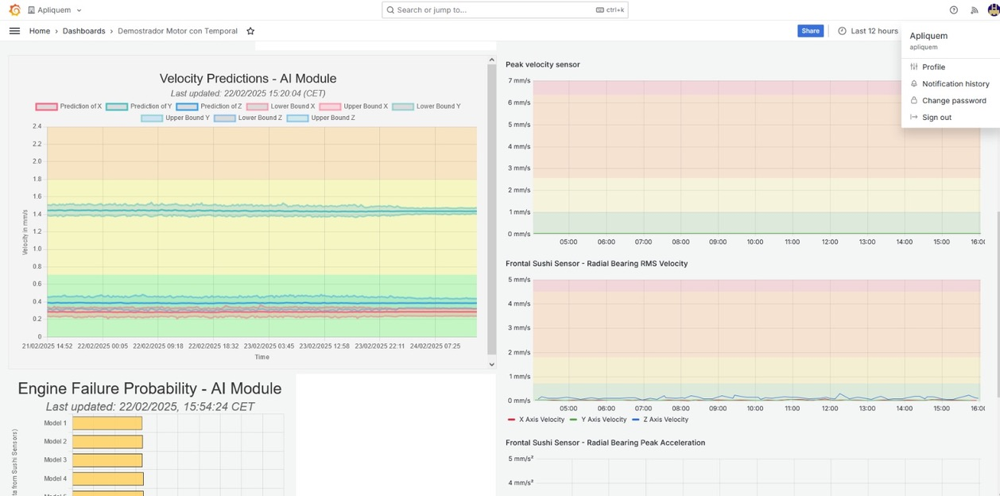
Offre une vue unifiée pour les opérateurs, les responsables techniques et les opérateurs.
Facilite le déclenchement de protocoles et le partage rapide d'informations pertinentes.
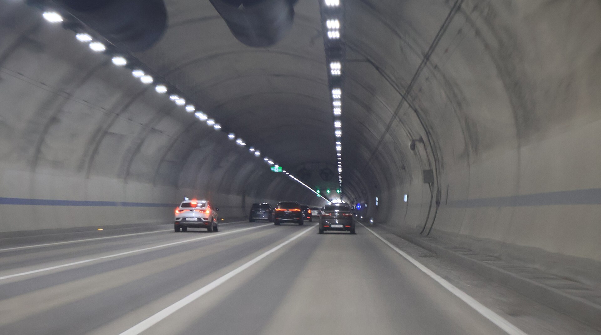
Surveillance configurable pour capturer les variables critiques, envoyer des données en temps réel et générer des alertes exploitables.
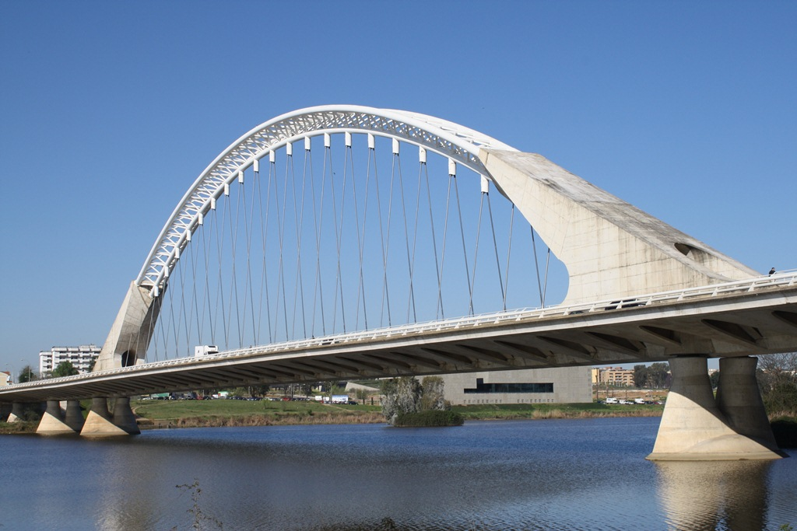
Surveillance continue du comportement structurel et de l'évolution du bien en service.
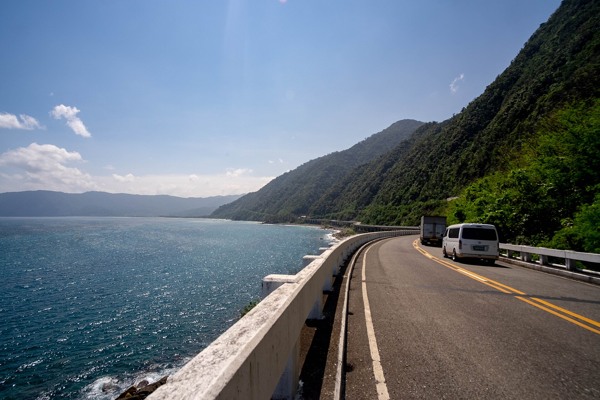
Contrôle des zones critiques avec une architecture ouverte et une visualisation opérationnelle centralisée.
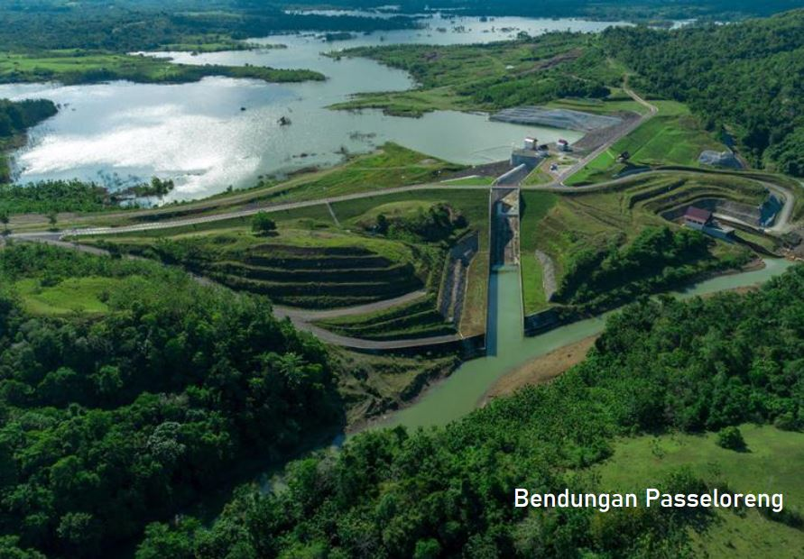
Surveillance des variables structurelles, environnementales et d'exploitation avec traçabilité continue.
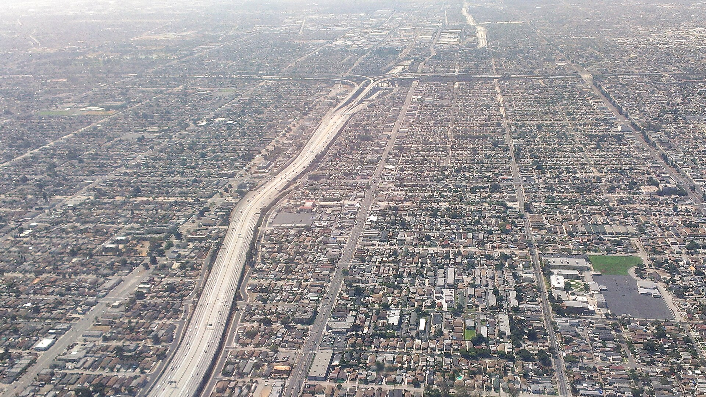
Surveillance des points sensibles, des nœuds routiers et des environnements où la sécurité nécessite une réponse précoce.
Surveillance adaptée aux infrastructures à forte criticité, occupation ou valeur patrimoniale.
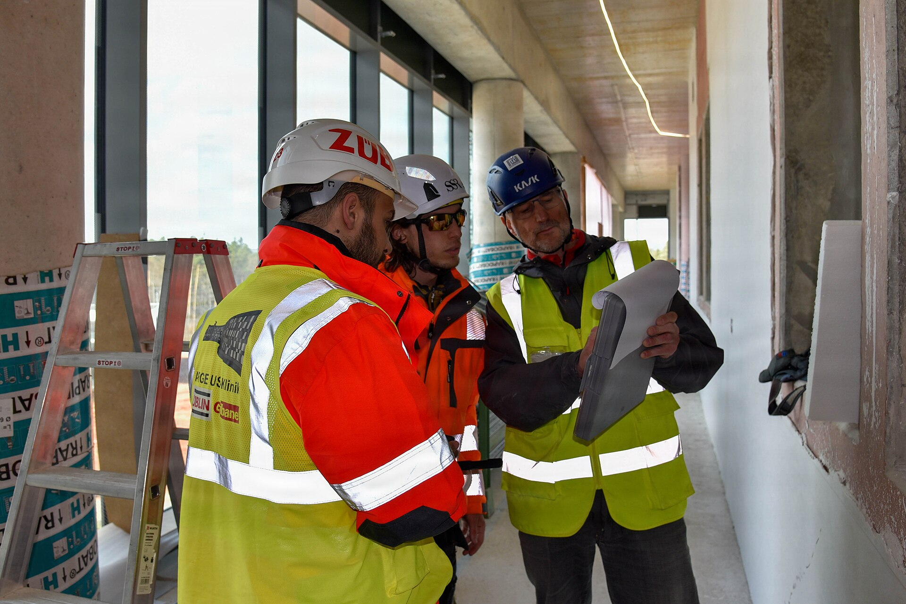
Contrôle des actifs et des infrastructures où la continuité du service est essentielle.
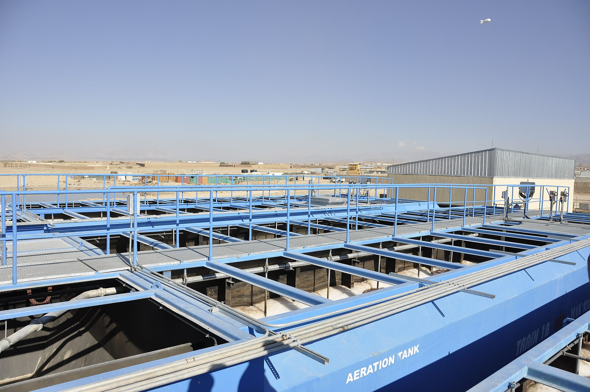
Déploiements configurables pour canalisations, drains et éléments civils liés à l'eau.
Sélection des actifs, criticité, variables à mesurer, besoins de couverture et KPI opérationnels.
Installation de capteurs, d'électronique, d'alimentation et de communications sur l'infrastructure réelle.
Afficher les paramètres, les événements, les seuils, les protocoles d'analyse et de notification.
Rapport d'impact, extension du système et exploitation en fonction de l'état réel de l'actif.
Qartia peut préparer des études techniques, des pilotes et des déploiements sur le terrain pour valider la sensorisation, la connectivité, l'analyse et les alertes sur les infrastructures civiles critiques.